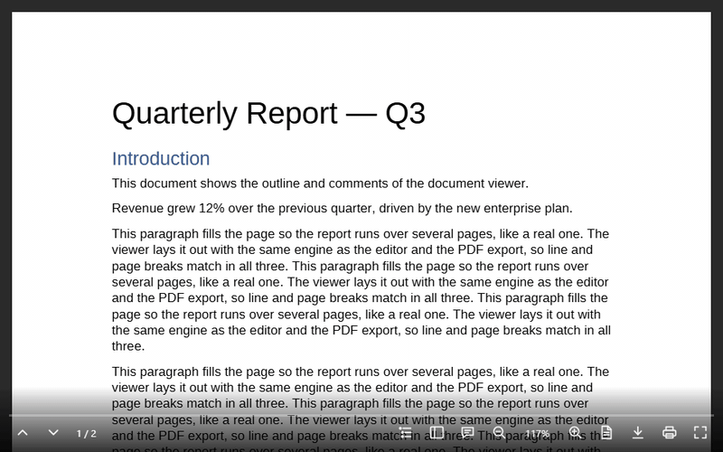

<universal-document-viewer>
The <universal-document-viewer> web component: a read-only viewer for .docx and .doc files with layout faithful to Microsoft Word — the same pagination, line breaks and page images as the editor and the PDF export, because all three use the same layout engine.
Package @universal-office/document-viewer

- Print, Read and Web views, zoom (page width, whole page or a percentage)
- Side panel with page thumbnails and the document outline (headings)
- Comments panel linked to the highlighted text
- Selectable, searchable text (invisible text layer over the canvas)
- Download the original file or a PDF, print and full screen; PDF export
- Keyboard and screen-reader accessible; English, Portuguese and Spanish UI
Installation
npm install @universal-office/document-viewerAll the code is inside the package: one ES module plus a folder that must be served next to it. Its only dependency is @universal-office/font-files (pinned to an exact version), the open fonts.
| Path | What it is |
|---|---|
index.js | The component (registers <universal-document-viewer> on import) |
chunks/ | Parts loaded on demand (hyphenation patterns, rare converters) |
@universal-office/font-files | Open fonts (Liberation, Carlito, Caladea) used as metric-compatible substitutes (see Fonts) |
import '@universal-office/document-viewer';<universal-document-viewer src="/report.docx" fonts="/node_modules/@universal-office/font-files"
style="display:block; height:100vh"></universal-document-viewer>Give the element a size with CSS — it fills its box.
Already using the editor? @universal-office/write contains this same component as a second entry, @universal-office/write/viewer, sharing its code with the editor — no need for this package too.
Attributes
| Attribute | Values | Description |
|---|---|---|
src | URL | Document to fetch and show (same origin or CORS). Reloads when changed. |
fonts | URL | Folder with the open fonts (the @universal-office/font-files package). Default: ../font-files/ relative to index.js — the sibling package in node_modules/@universal-office/, or the sibling folder when every package is copied to <base>/<name>/. Set it when the fonts are served from somewhere else, or when the component is bundled or loaded from a blob:/data: URL. Read once, on the first layout. |
view | print (default) · read · web | Initial view. |
zoom | page-width (default) · page-fit · number or % | Initial zoom, e.g. 125 or 125% (10–800%). |
noselect | boolean | Turns off text selection. |
nocontrols | boolean | Removes the whole control bar. |
no<item> | boolean | Removes one control: nonav, nocounter, nooutline, nothumbnails, nocomments, nozoom, noview, nodownload, nodownloadpdf (the Print button then prints directly, with no Save as PDF option), noprint, nofullscreen, noprogress. |
lang | en · pt · es | UI language (any region: es-MX, es-419… → Spanish). Without it: the first of Spanish/Portuguese/English the browser prefers (es-* → Spanish, pt-* → Portuguese), otherwise English. |
theme | auto (default) · light · dark | Light or dark UI. auto — or no attribute — follows the CSS color-scheme the element inherits from the page (see Light and dark); light/dark force it. |
Methods
| Method | Description |
|---|---|
loadDocx(bytes: Uint8Array): Promise<void> | Loads a .docx or .doc. Throws on an invalid file and keeps the current one. |
getPageCount() · getPageIndex() | Page count and current page (0-based). |
goToPage(i, smooth = true) | Scrolls to a page. |
getView() · setView('print' | 'read' | 'web') | Current view. |
getZoom() · setZoom(spec) | spec is 'page-width', 'page-fit' or a factor (1 = 100%, 0.1–8). getZoom() returns { spec, factor }. |
getHeadings() · goToHeading(i) | Outline: { level, text, page }[]. |
getComments() · selectComment(id) | Comments: { id, author, text, page }[]. |
exportPdf(): Uint8Array | PDF of the print layout. |
effectiveTheme | 'light' · 'dark' — the UI theme in effect (getter). |
print() · download() · downloadPdf() · toggleFullscreen() | Same as the control-bar buttons: Download saves the original file; Print opens a menu with Print… and Save as PDF (downloadPdf(), the PDF of the print layout). |
const viewer = document.querySelector('universal-document-viewer');
const bytes = new Uint8Array(await (await fetch('/contract.docx')).arrayBuffer());
await viewer.loadDocx(bytes);
viewer.setZoom('page-fit');Plugins
The viewer takes the same plugins as <universal-write> (Quill's model): per instance with viewer.use(plugin) / viewer.unuse(id), or for every instance with UniversalDocumentViewerElement.register(plugin) / unregister(id) (connected instances get it right away; new ones on connect; the same id again replaces it; a conflict in one instance is a console.warn, never a failed connection). A plugin declares inlineRenderers (painted over the fallback text of the content control, exactly as in the editor) and setup({ viewer }) (returns its cleanup).
| Method | Description |
|---|---|
use(plugin) · unuse(id) · pluginIds() | Plugins of this instance. |
getLinks() | Hyperlinks of the body in document order: { address } or { anchor } plus text. |
getCustomInlines(type?) | Plugin inlines of the body ({ type, data, fallbackText }). |
goToBookmark(name) | Scrolls to a bookmark; false if the document has no bookmark with that name. |
repaint() | Repaints the pages (state read by a renderer changed). |
Events
| Event | detail | When |
|---|---|---|
udv-loaded | { pages } | A document finished loading. |
udv-error | { src, error } | src could not be fetched or read. |
udv-page | { index } | The current page changed. |
udv-view | { view } | The view changed. |
udv-zoom | { zoom, factor } | The zoom changed. |
udv-heading | { index, level, text, page } | An outline entry was chosen. |
udv-comment | { id, author, text } | A comment was chosen. |
udv-download | { bytes, filename } | Download button. Cancelable — call preventDefault() to handle the file yourself. |
udv-download-pdf | { pdf, filename } | Save as PDF (Print menu). Cancelable — call preventDefault() to handle the PDF yourself. |
udv-print | { pdf } | Print button. Cancelable — handle printing yourself. |
udv-link-click | { address, anchor, text, page } | A hyperlink was clicked. Cancelable — without preventDefault(), http, https and mailto open in a new tab (noopener,noreferrer), bookmarks scroll into view and other schemes are ignored. |
udv-inline-click | { type, data, fallbackText, page } | A plugin inline was clicked. |
udv-plugin-added · udv-plugin-removed | { id } | Plugin lifecycle. |
udv-theme-change | { theme } | The UI theme in effect ('light' · 'dark') changed — the page's color-scheme, the OS (with light dark) or theme. |
Side panel
Light DOM children with slot="side" (or slot="side-start") are shown beside the pages, at the full height of the viewer: the page area — with its control bar — shrinks and refits its zoom, like the comments pane of Google Docs. The host owns the panel (its own component in the light DOM, so the page's styles apply), sets its width and shows or hides it; an empty or hidden slot takes no space. The panel scrolls by itself; keys and the wheel in it never reach the viewer (no page turns), it is outside full screen (which shows the pages only) and outside printing, and it inherits the viewer's color-scheme. The wrappers are ::part(side) and ::part(side-start). Together with the <universal-write> side panel and the bar kit's createBarRow({ titlePlacement: 'above-menus' }), a host keeps the same layout in edit and preview modes.
<universal-document-viewer src="/policy.docx">
<app-document-data slot="side" style="width: 320px"></app-document-data>
</universal-document-viewer>Light and dark
The viewer follows the **CSS color-scheme of its context** — the value it inherits from the page, across the shadow DOM. All its colors (desk, side panels, control bar, menus, thumbnails, comments) are --u-color-* tokens of @universal-material with light-dark() fallbacks, so the switch is pure CSS and live:
@universal-materialpages work as they are::root { color-scheme: light dark }follows the OS and theu-light/u-darkclasses setcolor-scheme; the viewer only looks at the resultingcolor-scheme, never at the classes.- No
color-schemeanywhere: the browser default (normal= light).color-scheme: light darkfollows the OS. theme="light"/theme="dark"force it;autoor no attribute inherits.- The page itself stays white (the document's paper), in both themes.
effectiveTheme and udv-theme-change report the theme in effect, read from a probe in the shadow root (no polling, no class observers; everything is released on disconnect).
Earlier versions were always dark. To keep that look, set theme="dark" (or color-scheme: dark on an ancestor), or pin the colors with the variables below.
Styling
CSS custom properties. Each one first reads --udv-<name>, then the shared --uo-<name> (one theme for both viewers). Like Google Docs and Drive, one background color covers the desk around the pages, the side panels and the control bar (which fades into it); only the page is different:
| Property | Default |
|---|---|
--udv-background | --u-color-surface-container-low (#f5f3f7 light / #1b1b1f dark): the one background |
--udv-web-background | #fff (Web view) |
--udv-page-gap | 16px |
--udv-panel-bg | side panels — --udv-background |
--udv-comment-highlight | #f5b400 |
--udv-focus-color | --u-color-primary |
--udv-selection | text-selection color |
--udv-controls-color · --udv-controls-size · --udv-controls-bg · --udv-controls-hover-bg | --u-color-on-surface · 22px · gradient into --udv-background · translucent ink |
--udv-progress-color · --udv-progress-track · --udv-progress-height | --u-color-primary · translucent ink · 3px |
Parts for ::part(): viewer, side, side-start, pages, page, nav-panel, nav-tab, outline, outline-item, thumbnails, thumbnail, comments, comment, menu, menu-option, controls, progress, progress-value, counter, button and button-<name> (prev, next, outline, thumbnails, comments, zoom-out, zoom-level, zoom-in, view, download, print, fullscreen).
universal-document-viewer {
--uo-controls-color: #ffd54f;
--udv-background: #1e1e1e;
}
universal-document-viewer::part(button-download) { display: none; }Fonts
Fonts embedded in the document are used first. Other families are resolved, in order, from: fonts the browser can see by name (installed or declared with @font-face), then metric-compatible open substitutes from the fonts folder (Calibri → Carlito, Cambria → Caladea, Arial → Liberation Sans, Times New Roman → Liberation Serif, Courier New → Liberation Mono), then Liberation Sans. The open fonts come in @universal-office/font-files, installed with this package; serving its folder keeps line breaks right when the reader does not have the Office fonts. The package also exports FontResolver for advanced setups:
import { FontResolver } from '@universal-office/document-viewer';
FontResolver.shared().configure({ baseUrl: '/assets/office-fonts' });Keyboard
| Keys | Action |
|---|---|
Ctrl/⌘ + · - · 0 and Ctrl+wheel | Zoom in, out, reset (disabled by nozoom) |
| → ↓ PageDown Space / ← ↑ PageUp (Read view) | Next / previous screen |
| Home · End | First / last page |
Formats
Input: .docx, .doc (Word 97–2003, converted in memory). Output: PDF (exportPdf, downloadPdf), the original file (download).
License
MIT. The fonts (@universal-office/font-files) are under the SIL OFL 1.1 and the Apache License 2.0.